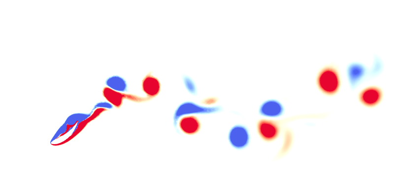

Morphing Foils — Biomimicry of Fish Locomotion
Summary — This project looks at how chordwise trailing-edge morphing can improve the propulsive performance of a flapping foil. I used an ALE-based 2D solver to combine morphing with pitching–heaving motion, and studied how morph timing and amplitude affect thrust, efficiency, and wake structure. Well-timed morphing produced gains of roughly 31% in thrust and noticeable improvements in efficiency.
Approach
I started with a baseline pitching–heaving kinematic and added morphing as an additional, controllable degree of freedom. I then:
- Ran parametric sweeps over morph amplitude and phase relative to the heaving motion.
- Computed time-averaged thrust, lift, and power coefficients for each case.
- Used DMD on wake snapshots to understand which flow modes were strengthened or weakened by morphing.
Key findings
The main result was that morph timing is critical: morphing that reinforces the formation of thrust-producing vortices can significantly boost performance, while poorly timed morphing can actually hurt thrust. The wake structure in the best cases showed a stronger and more coherent reverse von Kármán street.
What I learned
This project taught me how sensitive unsteady propulsion is to phase relationships, and how small changes in geometry and timing can completely change the wake. It also gave me experience in building interpretable CFD setups and using modal analysis tools like DMD to explain why a given configuration performs better.
Back to Projects